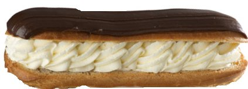

This project is maintained by AndrewGYork
Simulations in this article assume the following:
A correctly tuned STED microscope doesn't have as many degrees of freedom as Figure 1 suggests. If multiple combinations of Excitation, Depletion, Scan density and Exposure time give the same image quality (meaning, the same resolution and emissions per molecule), the combination which gives the lowest photodose is the correct choice. There are many ways to choose poorly. For example:
Compare Excitation: 0.25, Exposure time: 4 vs. Excitation:1, Exposure time 1, which give similar emissions per molecule, but very different depletion doses.
Compare Excitation: 1, Exposure time: 2 vs. Excitation 4, Exposure time: 1, which give similar emissions per molecule, but very different excitation doses.
Compare Depletion: 3, Scan density: 6 vs. Depletion: 3, Scan density: 12, which give the same PSF-limited resolution, but very different depletion doses.
Compare Depletion: 3, Scan density: 6 vs. Depletion: 27, Scan density: 6, which give the same Nyquist-limited resolution, but very different depletion doses and emissions per molecule.
Exposure time and Excitation aren't really independent choices, they're primarily determined by the desired emissions per molecule. There's room for a little tuning: for a given resolution and emission level, saturated excitation and short exposure times minimize depletion dose, while unsaturated excitation and long exposure times minimize excitation dose. Depending on how tolerant the sample is of excitation vs. depletion light, you might want to bias one way or the other. Scan density and Depletion aren't independent choices at all; they're both determined by the desired resolution improvement \(R\), and there's zero incentive to change one without changing the other to match.
How should we compare two techniques to decide which is gentler? One reasonable definition is that a gentler technique requires less photodose to achieve the same image quality. Equivalently, a gentler technique gives higher image quality for the same photodose, which is the definition I use for comparisons in Figure 2. Of course, we must define what we mean by photodose and image quality if we want to make meaningful, quantitative comparisons.
One reasonable metric of photodose is cumulative excitation fluence and depletion fluence delivered to each sample position during imaging (per-pulse fluence, summed over the scan positions, multiplied by the number of pulses per scan position, which is approximately uniform over the field of view except near the edges). This two-parameter metric makes it difficult to define useful "greater than, less than" comparisons; is an excitation dose of 5 and a depletion dose of 500 meaningfully gentler than an excitation dose of 50 and a depletion dose of zero?
In Figure 2, I want to avoid any ambiguities while comparing point STED vs. line STED, so I always compare the two techniques at equal excitation dose, and equal depletion dose. If the two techniques are given the same "damage budget", which one gives us higher image quality? Of course, sample damage due to STED photodose will depend sensitively on the implementation of the STED device and the nature of the sample, and the tolerance for excitation fluence vs. depletion fluence will certainly vary from sample to sample. Nonetheless, two techniques which deliver the same photodose with the same excitation and depletion colors, similar pulse durations, and similar peak pulse fluence will likely cause similar photodamage.
If "photodose" is tricky to define and compare quantitatively, "image quality" is nearly impossible; there's an effectively infinite variety of ways an image can be wrong or misleading. In this article's simulations, I know the true object, so I can use my preferred metric of image quality: a plot of reconstruction error vs. spatial frequency. More precisely, I Fourier transform the difference between the true object and the reconstructed object, and display the Fourier amplitudes as an image, using a logarithmic intensity scale. A bigger, blacker central region means a better reconstruction. Why do I prefer this metric?
If you interpret a microscope image as an answer to the question "where are the fluorophores?", you're simultaneously asking three questions:
Getting low spatial frequencies wrong is unacceptable. A microscope image is a noisy low-pass filtered version of the sample's fluorophore density. This is typically an excellent estimate of low spatial frequencies, and deconvolution can reduce systematic errors due to the filtering.
Getting high spatial frequencies wrong is guaranteed; there is always some frequency above which effectively nothing is known. The only appropriate answer is "I don't know". Note that "zero" is often used as a substitute for "I don't know", but is absolutely not the same thing.
To interpret an image, we must judge which spatial frequencies are known (low), and which are unknown (high). Which spatial frequencies survive the measurement (low-pass filtering) are primarily determined by the PSF(s) of the microscope (the filter), and the spatial frequencies amplitudes of the sample (the input to the filter). The constraint that the sample is non-negative sometimes allows us to infer spatial frequencies which are not directly measured, especially for samples with large regions of nearly-zero density.
Asking multiple questions at once is a good way to get a bad answer, especially when the questions aren't equally difficult. Suppose I asked you the average of today's temperature, and the temperature a million years into the future. How should you answer? The best answer is probably not a number, and it's certainly not to assume that the future temperature is zero. Perhaps the best answer would be, "I don't know, and that's a dumb question; you should ask me about those quantities separately."
Real-space metrics of image quality (for example, mean-squared error) typically ask exactly this type of mixed multiple question, asking for known low frequencies and unknown high frequencies simultaneously, and penalizing guaranteed-to-be-wrong answers about high spatial frequencies. Low-pass filtered real-space metrics of image quality are more defensible, but the optimal choice of low-pass filter depends on the object being imaged.
A plot of reconstruction error vs. spatial frequency cleanly avoids such problems; the transition in Figure 2(d, e) is obvious, and known quantities are characterized separately from unknown quantities. Image quality via this metric (or any other) is certainly subjective and certainly not well-ordered. However, if one imaging method produces a larger region of known frequencies compared to another, and error is strictly lower in this region, than we can conclude the lower-error method is better. In conclusion: if line STED gives a larger region of lower Fourier error compared to point STED, for the same cumulative excitation and depletion fluence, then line STED is gentler than point STED. As my simulations in Figure 2 show, it does, for the entire range of resolution improvements I've checked.
As discussed above, a correctly tuned STED microscope doesn't have as many degrees of freedom as Figure 1 suggests. In Figure 2, rather than choose Excitation, Depletion, Scan Density, and Exposure time independently, we instead choose a desired resolution improvement and signal level for descan point-STED, and my code solves for the inputs which will give this output. To avoid excessive excitation dose or depletion dose, we minimize Exposure time subject to the constraint that Excitation < 0.25.
After parameters are chosen for point-STED, I choose resolution improvement and signal level for descan and rescan line-STED that will give the same excitation and depletion dose as point-STED, and my code solves for the inputs which will give this output, subject to the same minimization of Exposure time and constraint that Excitation < 0.25. For each comparison, I choose the number of line-STED orientations to give strictly better image quality than point-STED; this number increases with increased resolution.
Note that we could use fewer orientations to increase acquisition speed and reduce depletion dose at the expense of "strictly better" image quality (some directions would have worse resolution than point STED, some would have better). In my experience, many real-life imaging challenges tolerate substantial resolution anisotropy. Here, my goal is the cleanest comparison of gentleness between point-STED and line-STED, so I stick to comparisons which are well-ordered.
The table below summarizes the resulting parameters used in Figure 2. The punchline: anything point-STED can do, line-STED can do better.
| Excitation dose | Depletion dose | Method | Peak R | Emissions | Orientations |
|---|---|---|---|---|---|
| 5.8 | 0.0 | Descan point | 1.00x | 4.00 | |
| Descan line | 1.00x | 4.00 | 1 | ||
| Rescan line | 1.38x | 4.00 | 2 | ||
| 11.4 | 500.3 | Descan point | 1.50x | 4.00 | |
| Descan line | 2.68x | 2.83 | 3 | ||
| Rescan line | 2.95x | 2.62 | |||
| 18.8 | 1696.8 | Descan point | 2.00x | 4.00 | |
| Descan line | 4.04x | 3.01 | 4 | ||
| Rescan line | 4.08x | 3.02 | |||
| 30.3 | 4159.5 | Descan point | 2.50x | 4.00 | |
| Descan line | 5.13x | 3.79 | 6 | ||
| Rescan line | 5.15x | 3.80 | |||
| 46.7 | 8601.8 | Descan point | 3.00x | 4.00 | |
| Descan line | 5.95x | 5.03 | 8 | ||
| Rescan line | 5.96x | 5.04 | |||
| 90.7 | 27044.0 | Descan point | 4.00x | 4.00 | |
| Descan line | 7.84x | 7.37 | 10 | ||
| Rescan line | 7.84x | 7.37 |
I need to establish that speed can be boiled down to two numbers: number of camera exposures, and number of scan positions. This is complicated, because it's not quite so simple.
Speed considerations: Photons per second Intensity measurements per second Scan positions per second Laser pulses per second Other overhead (non-fundamental but common) Non-poisson noise per intensity measurement. (Since this reduces SNR, it effectively reduces photons per second) How does speed scale with field of view? How does laser brightness scale with field of view? Descanned single-point STED is fundamentally limited by photons per second. Scanned multi-point STED is currently limited by intensity measurements per second, and frames per second. It also suffers from increased read noise. Descanned line-STED is currently limited by intensity measurements per second, and frames per second. It also suffers from increased read noise, and is further limited by K-mirror rotation speed. Rescanned line-STEDSeveral times in the article, I describe shapes by reference to pastries. In case international readers aren't familiar with the foods I'm referring to, this is what I mean when I say "doughnut":
...and this is what I mean when I say "eclair":

line_sted_figure_1.py, line_sted_figure_2.py, line_sted_figure_3.py
The data for Figures 1, 2, and 3 are created by running the corresponding Python 3 modules line_sted_figure_1.py, line_sted_figure_2.py, and line_sted_figure_3.py. You can view these modules in the rescan_line_sted Github respository. If you want to run or modify this code yourself, you'll need a Python 3 environment, and also the Python subpackages Numpy, Scipy, and Matplotlib. Anaconda satisfies these requirements with a single installation; if you're new to Python, this is the approach I recommend.
Once you've set up an appropriate Python 3 environment (including Numpy, Scipy, and Matplotlib), download and unzip the rescan_line_sted repository, navigate to the figure_generation directory, and execute the three figure generation scripts. They take quite a while to run (especially line_sted_figure_3.py), print a lot of gibberish to the console, and they generate a lot of output files (>10,000 files, >4 GB). Their output will be placed in a directory called big_images, which will be two levels up from the figure_generation directory (the same level as the master directory you unzipped).
Most of this output is in .svg format, which Matplotlib generates directly. Some of the output is in .gif or .mp4 format, which Matplotlib doesn't generate directly, so I generate .svg from Matplotlib and then my Python code calls ImageMagick and ffmpeg to convert to .gif and .mp4, respectively. If you want to do these conversions yourself, you'll have to install ImageMagick and ffmpeg, and you might have to modify the parts of my Python script that call ImageMagick and ffmpeg, if they're called differently on your OS then on mine. Email me if this is both challenging and important to you.
Note that my figure generation code is mostly concerned with formatting the figures; you don't have to understand this code to understand my calculations. If you want to understand the calculations which the paper is based on, I recommend focusing on line_sted_tools.py.
line_sted_tools.py
The line_sted_tools.py module defines the functions used to produce the data for Figures 1 and 2. You can view the full module in the rescan_line_sted Github respository. For simplicity and readability, I've included simplified annotated versions of the most important functions.
psf_report()The primary function of this module. See the start of this Appendix for a lengthy list of assumptions made by this simulation.
def psf_report(
psf_type, #Point or line
excitation_brightness, #Peak brightness in saturation units
depletion_brightness, #Peak brightness in saturation units
steps_per_excitation_psf_width, #Too small? Bad res. Too big? Excess dose.
pulses_per_position, #Think of this as "dwell time"
):
Note how the inputs to the function match the controls of Figure 1.
We call generate_psfs() to generate excitation and STED PSFs, and calculate their widths via Gaussian fitting:
psfs = generate_psfs(excitation_brightness, depletion_brightness, psf_type)
central_line_ex = psfs['excitation'][0, num_steps//2, :]
central_line_st = psfs['sted'][0, num_steps//2, :]
ex_sigma = get_width(central_line_ex)
sted_sigma = get_width(central_line_st)
resolution_improvement_factor_descanned = blur_sigma / sted_sigma
if psf_type == 'line':
central_line_rescan = psfs['rescan_sted'][0, num_steps//2, :]
rescan_sigma = get_width(central_line_rescan)
resolution_improvement_factor_rescanned = blur_sigma / rescan_sigma
blah
# Calculate emission levels and dose per pulse from the excitation
# and depletion PSFs. Note that the scan pattern is very important
# when calculating the illumnation dose! Point-sted requires a 2D
# raster, compared to line STED which only needs a 1D scan. This
# leads to a huge difference in dose, and a small difference in
# emission levels.
if psf_type == 'point': #2D scan, sum an area
excitation_dose = pulses_per_position * psfs['excitation'].sum()
depletion_dose = pulses_per_position * psfs['depletion'].sum()
expected_emissions = pulses_per_position * psfs['sted'].sum()
elif psf_type == 'line': #1D scan, sum a line
excitation_dose = (pulses_per_position *
psfs['excitation'][0, num_steps//2, :].sum())
depletion_dose = (pulses_per_position *
psfs['depletion'][0, num_steps//2, :].sum())
expected_emissions = (pulses_per_position *
psfs['sted'][0, num_steps//2, :].sum())
if verbose:
print("Excitation dose: %0.3f"%(excitation_dose), "half-saturations")
print("Depletion dose: %0.3f"%(depletion_dose), "half-saturations")
print("Expected emissions per molecule: %0.4f\n"%(expected_emissions))
if psf_type == 'point':
return {'resolution_improvement_descanned':
resolution_improvement_factor_descanned,
'excitation_dose': excitation_dose,
'depletion_dose': depletion_dose,
'expected_emission': expected_emissions,
'pulses_per_position': pulses_per_position,
'psfs': psfs}
elif psf_type == 'line':
return {'resolution_improvement_rescanned':
resolution_improvement_factor_rescanned,
'resolution_improvement_descanned':
resolution_improvement_factor_descanned,
'excitation_dose': excitation_dose,
'depletion_dose': depletion_dose,
'expected_emission': expected_emissions,
'pulses_per_position': pulses_per_position,
'psfs': psfs}
generate_psfs()
def generate_psfs(
shape, #Desired pixel dimensions of the psfs
excitation_brightness, #Peak brightness in saturation units
depletion_brightness, #Peak brightness in saturation units
blur_sigma,
psf_type='point',
output_dir=None,
verbose=True,
):
"""
A utility function used by psf_report().
"""
# Calculate gaussian point and line excitation patterns. Pixel
# values encode fluence per pulse, in saturation units.
if psf_type == 'point':
excitation_psf_point = np.zeros(shape)
excitation_psf_point[0, shape[1]//2, shape[2]//2] = 1
excitation_psf_point = gaussian_filter(excitation_psf_point,
sigma=blur_sigma)
excitation_psf_point *= excitation_brightness / excitation_psf_point.max()
if psf_type == 'line':
excitation_psf_line = np.zeros(shape)
excitation_psf_line[0, :, shape[2]//2] = 1
excitation_psf_line = gaussian_filter(excitation_psf_line,
sigma=(0, 0, blur_sigma))
excitation_psf_line *= excitation_brightness / excitation_psf_line.max()
# Calculate difference-of-gaussian point and line depletion
# patterns. Pixel values encode fluence per pulse, in saturation
# units.
if psf_type == 'point':
depletion_psf_inner = np.zeros(shape)
depletion_psf_inner[0, shape[1]//2, shape[2]//2] = 1
depletion_psf_inner = gaussian_filter(depletion_psf_inner,
sigma=blur_sigma)
depletion_psf_outer = gaussian_filter(depletion_psf_inner,
sigma=blur_sigma)
depletion_psf_point = (
(depletion_psf_outer / depletion_psf_outer.max()) -
(depletion_psf_inner / depletion_psf_inner.max()))
depletion_psf_point *= depletion_brightness / depletion_psf_point.max()
elif psf_type == 'line':
depletion_psf_inner = np.zeros(shape)
depletion_psf_inner[0, :, shape[2]//2] = 1
depletion_psf_inner = gaussian_filter(depletion_psf_inner,
sigma=(0, 0, blur_sigma))
depletion_psf_outer = gaussian_filter(depletion_psf_inner,
sigma=(0, 0, blur_sigma))
depletion_psf_line = (
(depletion_psf_outer / depletion_psf_outer.max()) -
(depletion_psf_inner / depletion_psf_inner.max()))
depletion_psf_line *= depletion_brightness / depletion_psf_line.max()
# Calculate "saturated" excitation/depletion patterns. Pixel values
# encode probability per pulse that a ground-state molecule will
# become excited (excitation) or an excited molecule will remain
# excited (depletion).
half_on_dose = 1
half_off_dose = 1
if psf_type == 'point':
saturated_excitation_psf_point = 1 - 2**(-excitation_psf_point /
half_on_dose)
saturated_depletion_psf_point = 2**(-depletion_psf_point /
half_off_dose)
elif psf_type == 'line':
saturated_excitation_psf_line = 1 - 2**(-excitation_psf_line /
half_on_dose)
saturated_depletion_psf_line = 2**(-depletion_psf_line /
half_off_dose)
# Calculate post-depletion excitation patterns. Pixel values encode
# probability per pulse that a molecule will become excited, but not
# be depleted.
if psf_type == 'point':
sted_psf_point = (saturated_excitation_psf_point *
saturated_depletion_psf_point)
elif psf_type == 'line':
sted_psf_line = (saturated_excitation_psf_line *
saturated_depletion_psf_line)
# Calculate the "system" PSF, which can depend on both excitation
# and emission. For descanned point-STED, the system PSF is the
# (STED-shrunk) excitation PSF. For rescanned line-STED, the system
# PSF also involves the emission PSF.
if psf_type == 'point':
descanned_point_sted_psf = sted_psf_point # Simple rename
elif psf_type == 'line':
emission_sigma = blur_sigma # Assume emission PSF same as excitation PSF
line_sted_sigma, _ = get_width(
sted_psf_line[0, sted_psf_line.shape[1]//2, :])
line_rescan_ratio = (emission_sigma / line_sted_sigma)**2 + 1
if verbose: print(" Ideal line rescan ratio: %0.5f"%(line_rescan_ratio))
line_rescan_ratio = int(np.round(line_rescan_ratio))
if verbose: print(" Neareset integer:", line_rescan_ratio)
point_obj = np.zeros(shape)
point_obj[0, point_obj.shape[1]//2, point_obj.shape[2]//2] = 1
emission_psf = gaussian_filter(point_obj, sigma=emission_sigma)
rescanned_signal_inst = np.zeros((
point_obj.shape[0],
point_obj.shape[1],
int(line_rescan_ratio * point_obj.shape[2])))
rescanned_signal_cumu = rescanned_signal_inst.copy()
descanned_signal_cumu = np.zeros(shape)
if verbose: print(" Calculating rescan psf...", end='')
# I could use an analytical shortcut to calculate the rescan PSF
# (see http://dx.doi.org/10.1364/BOE.4.002644 for details), but
# for the sake of clarity, I explicitly simulate the rescan
# imaging process:
for scan_position in range(point_obj.shape[2]):
# . Scan the excitation
scanned_excitation = np.roll(
sted_psf_line, scan_position - point_obj.shape[2]//2, axis=2)
# . Multiply the object by excitation to calculate the "glow":
glow = point_obj * scanned_excitation
# . Blur the glow by the emission PSF to calculate the image
# on the detector:
blurred_glow = gaussian_filter(glow, sigma=emission_sigma)
# . Calculate the contribution to the descanned image (the
# kind measured by Curdt or Schubert
# http://www.ub.uni-heidelberg.de/archiv/14362
# http://www.ub.uni-heidelberg.de/archiv/15986
descanned_signal = np.roll(
blurred_glow, point_obj.shape[2]//2 - scan_position, axis=2)
descanned_signal_cumu[:, :, scan_position
] += descanned_signal.sum(axis=2)
# . Roll the descanned image to the rescan position, to
# produce the "instantaneous" rescanned image:
rescanned_signal_inst.fill(0)
rescanned_signal_inst[0, :, :point_obj.shape[2]] = descanned_signal
rescanned_signal_inst = np.roll(
rescanned_signal_inst,
scan_position * line_rescan_ratio - point_obj.shape[2]//2,
axis=2)
# . Add the "instantaneous" image to the "cumulative" image.
rescanned_signal_cumu += rescanned_signal_inst
if verbose: print(" ...done.")
# . Bin the rescanned psf back to the same dimensions as the object:
rescanned_line_sted_psf = np.roll(
rescanned_signal_cumu, #Roll so center bin is centered on the image
int(line_rescan_ratio // 2),
axis=2).reshape( #Quick and dirty binning
1,
rescanned_signal_cumu.shape[1],
int(rescanned_signal_cumu.shape[2] / line_rescan_ratio),
int(line_rescan_ratio)
).sum(axis=3)
descanned_line_sted_psf = descanned_signal_cumu # Simple rename
if output_dir is not None:
if not os.path.exists(output_dir):
os.mkdir(output_dir)
if psf_type == 'point':
for array, filename in (
(excitation_psf_point,
'excitation_psf_point.tif'),
(depletion_psf_point,
'depletion_psf_point.tif'),
(saturated_excitation_psf_point,
'excitation_fraction_psf_point.tif'),
(saturated_depletion_psf_point,
'depletion_fraction_psf_point.tif'),
(sted_psf_point,
'sted_psf_point.tif')):
np_tif.array_to_tif(array, os.path.join(output_dir, filename))
elif psf_type == 'line':
for array, filename in (
(excitation_psf_line,
'excitation_psf_line.tif'),
(depletion_psf_line,
'depletion_psf_line.tif'),
(saturated_excitation_psf_line,
'excitation_fraction_psf_line.tif'),
(saturated_depletion_psf_line,
'depletion_fraction_psf_line.tif'),
(sted_psf_line,
'sted_psf_line.tif'),
(emission_psf, 'emission_psf.tif'),
(rescanned_signal_cumu,
'sted_psf_line_rescan_unscaled.tif'),
(rescanned_line_sted_psf,
'sted_psf_line_rescan.tif'),
(descanned_line_sted_psf,
'sted_psf_line_descan.tif')):
np_tif.array_to_tif(array, os.path.join(output_dir, filename))
if psf_type == 'point':
return {
'excitation': excitation_psf_point,
'depletion': depletion_psf_point,
'excitation_fraction': saturated_excitation_psf_point,
'depletion_fraction': saturated_depletion_psf_point,
'sted': sted_psf_point,
'descan_sted': descanned_point_sted_psf}
elif psf_type == 'line':
return {
'excitation': excitation_psf_line,
'depletion': depletion_psf_line,
'excitation_fraction': saturated_excitation_psf_line,
'depletion_fraction': saturated_depletion_psf_line,
'sted': sted_psf_line,
'descan_sted': descanned_line_sted_psf,
'rescan_sted': rescanned_line_sted_psf}
tune_psf()
def tune_psf(
psf_type, #'point' or 'line'
scan_type, # 'descanned' or 'rescanned'
desired_resolution_improvement,
desired_emissions_per_molecule,
max_excitation_brightness=0.5, #Saturation units
steps_per_improved_psf_width=3,
relative_error=1e-6,
verbose_results=False,
verbose_iterations=False,
):
"""
Find the combination of excitation brightness, depletion brightness,
and number of pulses to give the desired resolution improvement and
emissions per molecule, without exceeding a limit on excitation
brightness.
psf_report() lets us specify illumination intensities and scan step
sizes, and calculates resolution, emission, and dose. That's
conceptually great; these are the parameters we'd hand-tune when
using a STED microscope. Unfortunately, this also lets us make all
kinds of bad choices. For example, unless the step size matches the
resolution improvement, there's tons of excess dose for no gain. For
another example, you can always get more emission by increasing the
excitation intensity, but due to saturation, this is a terrible
approach
tune_psf() lets us specify our goals (resolution, emitted signal),
and figures out the inputs needed to get there.
This function is not fast or efficient, but that suits my needs, it
just has to generate a few figures.
"""
assert (psf_type, scan_type) in (('point', 'descanned'),
('line', 'descanned'),
('line', 'rescanned'))
assert float(desired_resolution_improvement) == desired_resolution_improvement
assert float(desired_emissions_per_molecule) == desired_emissions_per_molecule
assert float(max_excitation_brightness) == max_excitation_brightness
assert float(steps_per_improved_psf_width) == steps_per_improved_psf_width
assert float(relative_error) == relative_error
steps_per_excitation_psf_width = (steps_per_improved_psf_width *
desired_resolution_improvement)
args = { #The inputs to psf_report()
'psf_type': psf_type,
'excitation_brightness': max_excitation_brightness,
'depletion_brightness': 1,
'steps_per_excitation_psf_width': steps_per_excitation_psf_width,
'pulses_per_position': 1,
'verbose': False,
'output_dir': None}
num_iterations = 0
while True:
num_iterations += 1
if num_iterations >= 10:
print("Max. iterations exceeded; giving up")
break
# Tune the depletion brightness to get the desired resolution
# improvement:
def minimize_me(depletion_brightness):
args['depletion_brightness'] = abs(depletion_brightness)
results = psf_report(**args)
return (results['resolution_improvement_' + scan_type] -
desired_resolution_improvement)**2
args['depletion_brightness'] = abs(minimize_scalar(minimize_me).x)
if verbose_iterations:
print("Depletion brightness:", args['depletion_brightness'])
# How many excitation/depletion pulse pairs do we need to
# achieve the desired emission?
args['excitation_brightness'] = max_excitation_brightness
args['pulses_per_position'] = 1
results = psf_report(**args) # Calculate emission from one pulse
args['pulses_per_position'] = np.ceil((desired_emissions_per_molecule /
results['expected_emission']))
if verbose_iterations:
print(args['pulses_per_position'], "pulses.")
# Tune the excitation brightness to get the desired emissions
# per molecule:
def minimize_me(excitation_brightness):
args['excitation_brightness'] = abs(excitation_brightness)
results = psf_report(**args)
return (results['expected_emission'] -
desired_emissions_per_molecule)**2
args['excitation_brightness'] = abs(minimize_scalar(minimize_me).x)
if verbose_iterations:
print("Excitation brightness:", args['excitation_brightness'])
results = psf_report(**args)
## We already tuned the depletion brightness to get the desired
## resolution, but then we changed the excitation brightness,
## which can slightly affect resolution due to excitation
## saturation. Check to make sure we're still close enough to
## the desired resolution; if not, take it from the top.
relative_resolution_error = (
(results['resolution_improvement_' + scan_type] -
desired_resolution_improvement) /
desired_resolution_improvement)
if (relative_resolution_error < relative_error):
break
if verbose_results:
print("PSF tuning complete, after", num_iterations, "iterations.")
print(" Inputs:")
for k in sorted(args.keys()):
print(' ', k, ': ', args[k], sep='')
print(" Outputs:")
for k in sorted(results.keys()):
if k == 'psfs':
print(' ', k, ': ', sorted(results[k].keys()), sep='')
else:
print(' ', k, ': ', results[k], sep='')
print()
results.update(args) #Combine the two dictionaries
return results
Deconvolver()
class Deconvolver:
def __init__(self, psfs, output_prefix=None, verbose=True):
"""
'psfs' is a list of numpy arrays, one for each PSF.
'output_prefix' specifies where the deconvolver object will save files.
"""
self.psfs = list(psfs)
if output_prefix is None:
output_prefix = os.getcwd()
if not os.path.exists(os.path.dirname(output_prefix)):
os.mkdir(os.path.dirname(output_prefix))
self.output_prefix = output_prefix
self.verbose = verbose
self.num_iterations = 0
self.saved_iterations = []
self.estimate_history = []
return None
def create_data_from_object(
self,
obj,
total_brightness=None,
random_seed=None
):
assert len(obj.shape) == 3
assert obj.dtype == np.float64
self.true_object = obj.copy()
if total_brightness is not None:
self.true_object *= total_brightness / self.true_object.sum()
self.noiseless_measurement = self.H(self.true_object)
if random_seed is not None:
np.random.seed(random_seed)
self.noisy_measurement = [np.random.poisson(m) + 1e-9 #No ints, no zeros
for m in self.noiseless_measurement]
return None
def load_data_from_tif(self, filename):
self.noisy_measurement = np_tif.tif_to_array(filename) + 1e-9
assert self.noisy_measurement.shape == 3
assert self.noisy_measurement.min() >= 0
return None
def iterate(self):
if self.num_iterations == 0:
self.estimate = np.ones_like(self.H_t(self.noisy_measurement))
self.num_iterations += 1
measurement, estimate, H, H_t = (
self.noisy_measurement, self.estimate, self.H, self.H_t)
expected_measurement = H(estimate)
ratio = [measurement[i] / expected_measurement[i]
for i in range(len(measurement))]
correction_factor = self.H_t(ratio)
self.estimate *= correction_factor
return None
def record_iteration(self, save_tifs=True):
self.saved_iterations.append(self.num_iterations)
self.estimate_history.append(self.estimate.copy())
if save_tifs:
eh = np.squeeze(np.concatenate(self.estimate_history, axis=0))
np_tif.array_to_tif(eh, self.output_prefix + 'estimate_history.tif')
def f(x):
if len(x.shape) == 2:
x = x.reshape(1, x.shape[0], x.shape[1])
return np.log(1 + np.abs(np.fft.fftshift(
np.fft.fftn(x, axes=(1, 2)),
axes=(1, 2))))
np_tif.array_to_tif(
f(eh - self.true_object),
self.output_prefix + 'estimate_FT_error_history.tif')
return None
def record_data(self):
if hasattr(self, 'psfs'):
psfs = np.squeeze(np.concatenate(self.psfs, axis=0))
np_tif.array_to_tif(psfs, self.output_prefix + 'psfs.tif')
if hasattr(self, 'true_object'):
np_tif.array_to_tif(
self.true_object, self.output_prefix + 'object.tif')
if hasattr(self, 'noiseless_measurement'):
nm = np.squeeze(np.concatenate(self.noiseless_measurement, axis=0))
np_tif.array_to_tif(
nm, self.output_prefix + 'noiseless_measurement.tif')
if hasattr(self, 'noisy_measurement'):
nm = np.squeeze(np.concatenate(self.noisy_measurement, axis=0))
np_tif.array_to_tif(
nm, self.output_prefix + 'noisy_measurement.tif')
return None
def H(self, x):
"""
Expected noiseless measurement operator H. If 'x' is our true
object and there's no noise, H(x) is the measurement we expect.
"""
result = []
for p in self.psfs:
blurred_glow = fftconvolve(x, p, mode='same')
blurred_glow[blurred_glow < 0] = 0 #fft can give tiny negative vals
result.append(blurred_glow)
return result
def H_t(self, y, normalize=True):
"""
The transpose of the H operator. By default we normalize
H_t(ones) == ones, so that RL deconvolution can converge.
"""
result = np.zeros(y[0].shape)
for i in range(len(y)):
blurred_ratio = fftconvolve(y[i], self.psfs[i], mode='same')
blurred_ratio[blurred_ratio < 0] = 0 #fft can give tiny negative vals
result += blurred_ratio
if normalize:
if not hasattr(self, 'H_t_normalization'):
self.H_t_normalization = self.H_t([np.ones(_.shape) for _ in y],
normalize=False)
result /= self.H_t_normalization
return result